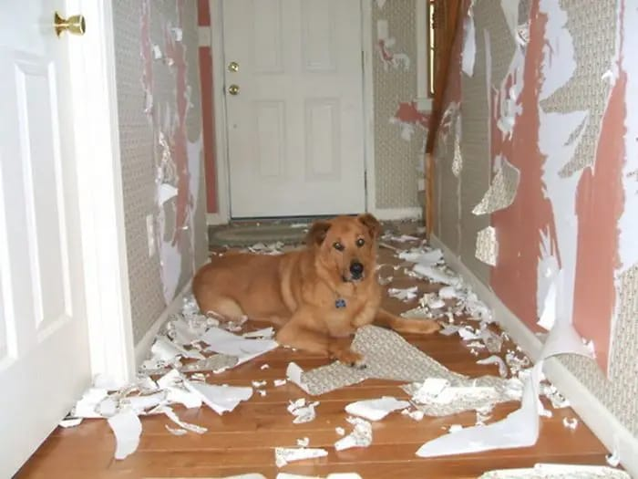
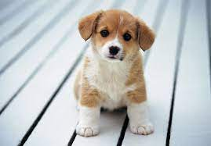

Uma consulta comportamental de animais envolve um profissional observando e avaliando o comportamento do animal para compreender desafios específicos, como agressividade, medo ou comportamentos indesejados. O especialista discute a história do animal, ambiente, interações e rotinas com o proprietário.
Com base nessas informações, são recomendadas estratégias de treinamento e modificações ambientais para promover comportamentos desejados e resolver problemas específicos.
O acompanhamento pode ser necessário para ajustar as abordagens conforme o progresso. O objetivo é melhorar o bem-estar e a interação entre o animal e seu ambiente.
O processo de aprendizado adequado na fase de filhote, evita de forma considerálvel os problemas comportamentais na vida adulta de cães e gatos, exemplos:traumas e fobias.
E para que isso aconteça, a consulta comportamental de filhotes se torna essencial, para que os tutores saibam lidar e conhecer os comportamentos naturais, e de que forma exibir e estimular determinados comportamentos para uma boa comunicação e uma boa relação ao longo da vida,
uma consulta comportamental para filhotes de animais envolve:
Socialização: Orientações para expor os filhotes a diferentes estímulos sociais para um desenvolvimento equilibrado.
Treinamento básico: Ensino de comandos simples e abordagem de problemas comportamentais comuns, como morder ou fazer necessidades no lugar errado.
Saúde mental e emocional: Identificação e manejo de medos, ansiedades e estresse do filhote.
Nutrição e exercício: Recomendações sobre dieta adequada e níveis apropriados de atividade física para um crescimento saudável.
Dinâmica familiar: Discussão sobre a interação entre o filhote e os membros da família, criando um ambiente harmonioso para seu desenvolvimento.

